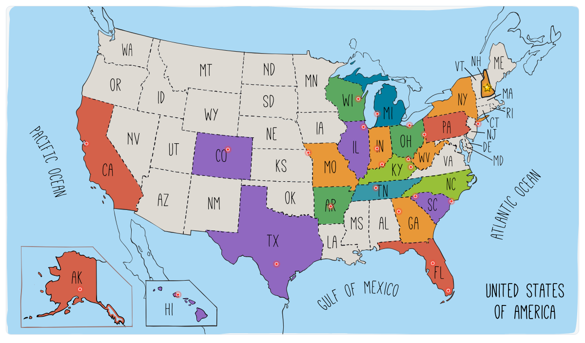

RUN50 DISPATCH · NEW HAMPSHIRE
第22州 · 新罕布什尔 · Clarence DeMar Marathon
新罕布什尔基恩 · 2024.09.28
Vlog 开场位｜New Hampshire
OPENING NOTE
从尼亚加拉瀑布一路开进新英格兰秋色，在基恩的小镇清晨、山林赛道和校园终点里完成第22州。
本文速记
从尼亚加拉瀑布一路开进新英格兰秋色，在基恩的小镇清晨、山林赛道和校园终点里完成第22州。

奖牌质感封面｜New Hampshire

第22州 · Keene
FIELD NOTE 01
秋假没假 · 偷跑去看瀑布
前言
九月底，按学校日历说是“秋假”。但秋假这种东西，在我们实验室只存在于通知里。眼看着毕业答辩临近，一个月也没跑马拉松，心里直犯嘀咕：是不是得找个理由出去透口气？
照例翻开 RaceRaves 看看地图，发现新罕布什尔正好有场评价极高的马拉松：克拉伦斯·德马尔马拉松。唯一的问题：从肯塔基开车过去，要整整十七个小时。
我和47一合计，既然要跑这么远，不如“化整为零”。先去看看世界上最有名的美国最大瀑布：尼亚加拉瀑布，再一路北上穿过佛蒙特的秋色，最后杀到新罕布什尔的基恩小镇。
于是，这趟“没有秋假的秋假之旅”，就这么被拍板了。
FIELD NOTE 02
白山与枫叶的州
第22州 · 新罕布什尔
新罕布什尔（New Hampshire）位于美国东北部，是 新英格兰六州之一。新英格兰包括缅因、佛蒙特、新罕布什尔、马萨诸塞、康涅狄格和罗得岛。这片区域是美国最早的殖民地之一，有着深厚的历史，也有特别鲜明的四季。
新罕布什尔本身是个小州，但特点很突出：
山林与湖泊：州北部是著名的白山（White Mountains），最高峰华盛顿山（Mount Washington）常年风大，以天气多变出名；州中部有很多湖泊，像温尼珀索基湖（Lake Winnipesaukee）在夏天是度假胜地。
秋天的枫叶：新英格兰的秋色很出名，而新罕布什尔正是观叶的好去处。九月底十月初，整片山林都变成红、黄、橙交织的画卷。
小镇气息：没有大城市的喧闹，最大城市是曼彻斯特（Manchester），首府是康科德（Concord）。我们这次的目的地基恩（Keene）是个大学城，安静又有文化氛围。
在美国跑步圈里，新英格兰的传统也很特别。这里是 波士顿马拉松的发源地，全美最古老的马拉松文化从这里走出。
FIELD NOTE 03
尼亚加拉瀑布 · 水雾里的震撼
Chapter 1
我们周四晚上从路易斯维尔出发，中途住在了 Red Roof Inn。正好快到万圣节，酒店外面已经摆上了南瓜装饰，气氛挺热闹。第二天一早继续开车，终于来到了尼亚加拉瀑布所在的城市——纽约州的尼亚加拉瀑布市（Niagara Falls, NY）。

北上长途第一晚 @Arsenan

酒店里的万圣节南瓜装饰 @Arsenan

在尼亚加拉瀑布游客中心看路线图 @Arsenan

尼亚加拉瀑布欢迎墙 @Arsenan
停车场边上就是游客中心和商场，里面有个热情的大叔拿着地图，跟我们介绍怎么走、哪里看风景最好。可惜我们到得有点晚，没赶上乘船的时间。于是就直接步行进了 尼亚加拉瀑布州立公园（Niagara Falls State Park）。

在 Welcome to Niaga @Arsenan

观景台上的美国瀑布 @Arsenan

站在栏杆边 @Arsenan
这是全美历史最悠久的州立公园，设计者是中央公园的设计师奥姆斯特德（Frederick Law Olmsted），园区里修了步道和观景台，方便游客亲近瀑布。

Siqi 在尼亚加拉瀑布观景台 @Arsenan

美国瀑布卷起大片水雾 @Arsenan

和美国瀑布来一张自拍 @Arsenan
我们先去了特斯拉雕像前的观景台。从这个角度能看到美国瀑布的全貌。之所以有特斯拉的雕像，是因为他和爱迪生当年就在这里展开了“电流大战”。最后特斯拉的交流电方案胜出，第一座水力发电站就建在尼亚加拉瀑布，这里也成了电气时代的象征。

从高处看尼亚加拉河和美国瀑布 @Arsenan

尼亚加拉瀑布州立公园里的特斯拉介绍牌 @Arsenan

穿上黄色雨衣准备进入风之洞 @Arsenan
接着我们去体验了 “风之洞”（Cave of the Winds）。进入前要先在展览馆里看一段影片，介绍尼亚加拉的地质、瀑布的形成，以及水力发电的故事。

风之洞木栈道上的水雾 @Arsenan

在瀑布下方看扑面而来的水汽 @Arsenan

木栈道一路伸进浓雾里 @Arsenan
然后领一件黄色雨衣，坐电梯下到瀑布脚下的木栈道。那一刻就像是走进狂风暴雨里，水花直接砸在脸上，眼睛都睁不开，鞋子一会儿就湿透。站在栈道上，耳边全是轰鸣声，瀑布就在眼前咆哮，真的很震撼。

站在风之洞的轰鸣和水花之中 @Arsenan

离开瀑布步道后的州立公园标志 @Arsenan

黄雨衣游客站在瀑布下方 @Arsenan

尼亚加拉河边的观景步道 @Arsenan
往前走，还能看到另一侧的 马蹄瀑布（Horseshoe Falls）。相比美国瀑布，它更宽更壮观，对面就是加拿大，据说从加拿大那边看视角更好。

白天参观结束后的尼亚加拉天际线 @Arsenan

下午水雾中的马蹄瀑布 @Arsenan

马蹄瀑布倾泻入峡谷 @Arsenan
傍晚我们在附近找了一家中餐馆吃饭，稍微暖和一下。

湿透之后去 Niagara Fall @Arsenan

游船穿过瀑布下方的绿色水面 @Arsenan

夜晚灯光下的尼亚加拉瀑布合影 @Arsenan
晚上又回到公园看夜景。瀑布在五彩灯光下显得梦幻无比，水雾映着蓝、紫、红的颜色，不停变换。站在那一刻，感觉白天的震撼换成了夜晚的梦幻。

夜色中彩灯照亮瀑布水雾 @Arsenan

紫色灯光下的马蹄瀑布 @Arsenan

夜晚的 Skylon Tower 和 @Arsenan
看完夜景，我们继续开车，晚上住在雪城（Syracuse）的 Airbnb，为第二天继续北上的旅程做准备。

蓝色灯光映着尼亚加拉河 @Arsenan

红橙色灯光下的瀑布 @Arsenan

粉紫色夜灯里的瀑布水雾 @Arsenan
FIELD NOTE 04
穿越佛蒙特秋色 · 赛前大趴体
Chapter 2
离开尼亚加拉，我们晚上在雪城住了一晚。第二天早上天很晴，云层很漂亮。

早晨离开雪城 Airbnb 前 @Arsenan

从雪城出发时的晴朗天空 @Arsenan
我对雪城的印象不多，只知道这是雪城大学的所在地，安东尼当年在这里打过球。我初中同学小高也曾在这里读过书，所以觉得有点熟悉。

开进新英格兰秋色里的公路 @Arsenan
离开雪城，车子慢慢开进佛蒙特州。九月底正是新英格兰的观叶季节，满山遍野的树叶开始变红、变黄，颜色层层叠叠。我们找了个地方下车，随手拍了几张照片。

佛蒙特路边的秋色停靠点 @Arsenan

车窗里拍到的 Siqi 和秋天山景 @Arsenan
一路穿过佛蒙特，终于到了目的地：遥远的新罕布什尔州。下午先去大学里取装备，地点是 基恩州立学院（Keene State College），当地的小型大学。

九月底层层叠叠的佛蒙特山色 @Arsenan
大厅里人不算多，大家安静排队，气氛挺轻松的。

在 Keene State Coll @Arsenan

山间小屋附近的新罕布什尔绿意 @Arsenan
取完装备，我们开车进了山里，找到 Airbnb 的小木屋。房东是一位独居的老奶奶，把屋子打理得整整齐齐，窗外就是秋天的森林。

基恩郊外安静山路旁的白色教堂 @Arsenan
傍晚我们去了马拉松赛前的 party。自助餐很家常，意大利面配肉丸子。更特别的是，晚会上有一位传奇嘉宾演讲，Kathrine Switzer，第一位正式报名并跑完波士顿马拉松的女性。

克拉伦斯·德马尔马拉松赛前晚餐会 @Arsenan

赛前 pasta dinner 的意 @Arsenan
她分享了当年如何坚持、如何面对质疑，也鼓励我们把马拉松当作一段生命旅程。

Kathrine Switzer 在 @Arsenan
晚上，我们回到小木屋，天色已经完全暗下来。森林里只有木屋的灯光在闪，屋里暖暖的。

讲台上的 Kathrine Swit @Arsenan

赛前聆听 Kathrine Swit @Arsenan
老奶奶和我们聊起她二十年前曾去过中国。而我一时也不知道怎么准确地介绍现在的中国，那一刻，突然意识到自己也已经很久没回去了。

夜色森林里亮着灯的小木屋 @Arsenan
FIELD NOTE 05
山林里的起跑线
Chapter 3
克拉伦斯·德马尔马拉松（Clarence DeMar Marathon）是新罕布什尔州最有代表性的马拉松，从 Gilsum 小镇的社区学校出发，终点在 基恩州立学院的 Appian Way，就在 Clarence DeMar 当年带学生训练的地方。

全程路线图 · 赛事资料

比赛清晨 @Arsenan
这个马拉松创办于 1978 年，每年九月底举行，时间正好赶上新英格兰的秋色。路线经过山林、乡间公路，还会路过湖泊和小镇。

乡间公路上的起点人群 @Arsenan

从 Gilsum 出发后的前几英里 @Arsenan
虽然整体是下坡（海拔从 800 英尺降到 500 英尺），但中间有不少起伏，像 15 英里有一段长坡，22 英里和 24 英里在墓园附近还有短而陡的坡，所以整体难度不低。

赛道旁加油的小观众 @Arsenan

克拉伦斯·德马尔马拉松 1 英里牌 @Arsenan
比赛当天早晨，我和 Siqi 出发前在房东奶奶的笔记本上留了几句话。Siqi 先送我去 Gilsum 的全马起点，然后自己去半马的起点 Surry Mountain Beach。

起伏公路上的早段队伍 @Arsenan

前半程的农场路和秋色 @Arsenan
起点不大，就是小镇的马路口，但大家聚在一起，气氛很亲切。我注意到一位白发奶奶，身上披着白色绶带，这是她完成美国 50 个州马拉松的最后一站。

树林下的 3 英里牌 @Arsenan

穿过新罕布什尔树林的阴影路段 @Arsenan
起跑后，气温有点凉，我穿的脱衣很快热了，放在英里牌处。衣服的是拼多多上买的，很便宜。

林间公路上的 6 英里牌 @Arsenan

赛道旁开阔草地和远山 @Arsenan
赛道两边都是树林，空气很清新。跑到 3 英里，树林更密了，落叶铺了一地，踩上去沙沙作响。昨天晚会上遇到的几个朋友也在赛道上，互相打了个招呼。

路边摇铃加油的当地观众 @Arsenan

安静公路边的水面和树影 @Arsenan
8 英里的时候，到了 Surry Mountain Lake。湖面开阔，远处的山已经有了红黄相间的颜色，景色很漂亮。这段路比较平缓，是全程里心情最放松的一段。

接近萨里山湖 @Arsenan

湖边路段的志愿者和路锥 @Arsenan
到 10 英里，还在乡间，路不宽，两边是林子和草地。这里观众比前面多了一些，本地居民站在路边加油。补给站也很及时，水和饮料都有。

沿着萨里山路 @Arsenan

萨里山湖路段 @Arsenan
到了 11 英里，赛道跑上了 Surry Mountain Dam（萨里山大坝）。大坝把湖拦了出来，路面修得很平整，就像在湖面上跑。左手边是湖水，右手边是树林，远处还能看到 Monadnock 区域的山影。风吹过来有点凉，但景色很开阔，算是全程最有特色的一段。

离开湖区后继续穿过树林 @Arsenan

阴影路线上开始出现墓碑 @Arsenan
FIELD NOTE 06
秋色里的跑啊跑
Chapter 4
脚步还在新罕布什尔的秋色里前进。路边时不时冒出几个观众，举着牌子、摇着铃铛给我们打气；转过弯又会遇见墓地和石碑，气氛安静。

赛道上的超人 @Arsenan

超人和小帮手在英里牌旁加油 @Arsenan
14 英里前，一个“超人”突然出现在赛道旁边，披着红色斗篷，举着拳头，特别显眼。我忍不住上去合了张影，感觉好像瞬间被加了个 BUFF，受到了某种暗物质的影响，一下子轻快不少。

通往基恩路上的 15 英里牌 @Arsenan

路边神标语：你跑得比政府好多了 @Arsenan
继续往前跑，还遇到了一位穿着波士顿马拉松衣服的阿姨。在美国赛道上，波士顿的标志就像一块勋章。看到她，我心里暗暗想：总有一天，我也要靠实力去买一个。

赛道上遇到穿波士顿装备的跑者 @Arsenan

居民区路边热情加油的人群 @Arsenan
到 17 英里，终于看见了 Siqi，她状态听好，还是有实力的。观众也比前面多了起来，有小孩举着彩纸，有居民在门口喊“good job”，气氛很热闹。

林间公路旁的白衣啦啦队 @Arsenan

后半程高高松林形成的安静隧道 @Arsenan
接下来是一段林间的小路，两旁的树高高立着，跑在其中像是进了天然的隧道。再坚持一会儿，就到了 20 英里，身体开始觉得有点重了，但状态还行。

一个跑者消失在树林深处 @Arsenan
FIELD NOTE 07
墓地里的静与动
Chapter 5
赛道继续蜿蜒向前，本地居民的热情依旧。有时候还能遇到一群正在训练的小女生，成队地从路口跑过，看到我们经过，还会笑着为大家鼓掌加油。穿过几栋白色小房子组成的居民区，我来到了比赛最特别的一段：一片很大的墓地。

人行横道旁的 20 英里牌 @Arsenan

居民区补给点附近的跑者和观众 @Arsenan

一队小跑者穿过赛道 @Arsenan
这片区域其实由 Woodland Cemetery 和 Greenlawn Cemetery 组成，是基恩最古老、最大的墓地，很多当地的名人和退伍军人都长眠于此。在这里，22 英里的里程牌就立在墓碑之间。草地上整齐立着一排排石碑，既壮观又安静。赛道专门穿过墓地，边上还有补给点和志愿者。

通往墓园路段的住宅街 @Arsenan

墓园入口附近指引跑者的志愿者 @Arsenan
气氛很安静，却并不让人害怕，反而带着一种肃穆和力量感。

逐渐接近基恩的墓园道路 @Arsenan

墓园路段里的 22 英里牌 @Arsenan
跑在这里，能感受到一种平和，好像提醒大家：活着就要去奔跑。

Siqi 跑过墓园路段 @Arsenan

跑者进入阴影里的墓园道路 @Arsenan
我心里忍不住想到，中美文化在这方面真的很不同。在中国，跑进墓地可能会被认为不吉利，但在美国，墓地常常就是社区的一部分，人们会在里面散步、跑步，甚至野餐。对他们来说，这是一种纪念和生活相连的方式。跑在墓碑之间，反而让人觉得自己和历史同在。

墓园出口附近的补给站和观众 @Arsenan

后半程依然笑得出来 @Arsenan
在这里，我第二次遇到了 Siqi，我们打了个招呼继续前进。终于跑出了墓地，外面是孩子们跳舞的加油队，和里面的安静氛围形成了鲜明对比。

最后四分之一赛程里看表确认状态 @Arsenan

最后几英里附近的居民区和篮球架 @Arsenan
接着在 25 英里前，我又第三次遇见了 Siqi。全马和半马的路线时而分开、时而重合，所以我们在同一场比赛里碰到了三次，这也是难得的体验。眼前就剩最后一英里了，终点的气氛似乎已经在空气里弥漫开来。

接近 Keene State 终点 @Arsenan

25 英里牌 @Arsenan
FIELD NOTE 08
最后一英里 · 冲向校园
Chapter 6
最后一英里，要跑进 Keene State College（基恩州立学院） 了。校门口有啦啦队在加油，声音很热闹。

Keene State 校园终点 @Arsenan

跑进 Keene State @Arsenan

Clarence DeMar 旗帜 @Arsenan
因为这个马拉松规模不算大，冲线前的这一段，只有我自己，很多观众在两侧围栏里，我就像独享了全场的欢呼。

通向终点的最后直道 @Arsenan

终点瞬间 · 赛事摄影

冲线瞬间 · 赛事摄影
我举起双手冲过终点，志愿者阿姨笑着把奖牌挂在我脖子上。奖牌的形状像 Strava 的会员标志外框，里面是一个跑者举起双臂冲线的剪影，背景是新罕布什尔的群山和湖泊。设计很简洁，但有力量。

官方赛照 · 赛事摄影

终点线后的观众和围栏 @Arsenan

我和 Siqi 都顺利完赛后会合 @Arsenan
我和 Siqi 在终点会合，她也顺利完赛。我们端着组委会提供的热汤，站在草地上喝着，身体立刻暖和了不少。然后坐车去她的半马起点取车。

Keene State 赛后合影 @Arsenan

Clarence DeMar 奖牌 @Arsenan

戴着奖牌的赛后自拍 @Arsenan
半马的起点在 Surry Mountain Lake（萨里山湖）。这是阿舒洛特河上的一座人工湖，由美国陆军工程兵团在 1940 年代修建水坝，主要用来防洪。

奖牌背景板前的完赛照 @Arsenan

赛后端着热汤坐下来缓一缓 @Arsenan

赛后在车尾休息 @Arsenan
湖面很大，一侧有沙滩和野餐区，是当地人夏天度假的地方。背后是一整片叫 Surry Mountain（萨里山） 的山林保留区，林木茂密，山势起伏，也是小镇居民喜欢徒步和跑步的地方。

Surry Lake 航拍 · 航拍资料

秋林航拍 · 航拍资料

湖岸航拍 · 航拍资料
我们放飞了无人机，镜头里，湖水安静得像一面镜子，把天上的云彩都照了进去，岸边的树林正好染上红黄相间的秋色。

大坝航拍 · 航拍资料

湿地航拍 · 航拍资料

湖面航拍 · 航拍资料
来一次新罕布舍尔挺辛苦，但看到这一幕，感觉也算值回票价了。

湖区小路 · 航拍资料

完赛后的校车接驳 @Arsenan
FIELD NOTE 09
秋日旅程的句号
后记
下午我们离开了新罕布什尔。我换上了这次 Clarence DeMar Marathon 的蓝色长袖纪念衫，心里还有点意犹未尽。一路上脑子里还在回想早上跑过的场景：山林里安静的小路，湖面映着云彩的大坝，墓地里庄重安详的氛围，还有路边观众热情的加油声。

换上蓝色赛事纪念衫 @Arsenan
回程的路线不一样，我们绕到了纽约附近，来到了 New Haven（纽黑文），耶鲁大学的所在地。

马拉松后的纽黑文印度餐 @Arsenan
我们在城里停了一下，找了家印度餐馆，点了Lamb Masala（羊肉咖喱）、烤饼和米饭，补了一顿能量。饭后又开车绕着耶鲁校园转了一圈，窗外灯光映在红砖楼和高塔上，有种安静的美感。
耶鲁大学建于 1701 年，是美国历史最悠久的常春藤名校之一，校园里有很多典雅的哥特式建筑。这里走出了不少知名校友，比如美国的几任总统（小布什、克林顿）、国务卿（希拉里·克林顿、约翰·克里）、还有 查良镛，也就是金庸。

傍晚开车经过耶鲁大学 @Arsenan
开车穿过校园，能感受到那种沉稳厚重的气场，似乎还带着一点武侠味儿，即便外面下着小雨，也不影响它的气派。

夜色里的耶鲁校园建筑 @Arsenan
晚上，我们住进了一家小旅馆。第二天一早，继续开车回到肯塔基。虽然这天正好是秋假，老板还是临时加了个会，让我无处遁形，最近考勤管得挺紧。
但即便这样，我对这次新罕布什尔之行没有一丝丝后悔。第22州，跑在新英格兰的秋色里，见到的人和事都很特别。

回肯塔基前一晚 @Arsenan
赛后，我还找到了那位完成 50 州挑战的老奶奶 Penny Roll 的跑步视频。我和“超人”的那张合影，就是从她的视频里翻到的镜头。以后还是得多蹭镜头啊，一个小小的巧合，也让我也成为了传奇记录的一部分。
RUN50 FINISH LINE
这一站，收进地图。
这一站最好的地方，不是它有多快，而是新英格兰的小镇、树林和校园终点，把一场全马跑得很有季节感。
22
RUN50
KEENE
MARK
FALL
NOTE
这类小镇比赛很适合慢慢回味：赛道不一定热闹，但路边的树、学校终点和赛后那碗热东西，会把人留住。你要是也跑过类似的新英格兰小城马，可以留言告诉我是哪一场。
文字 / 编辑 / 排版 · Arsenan